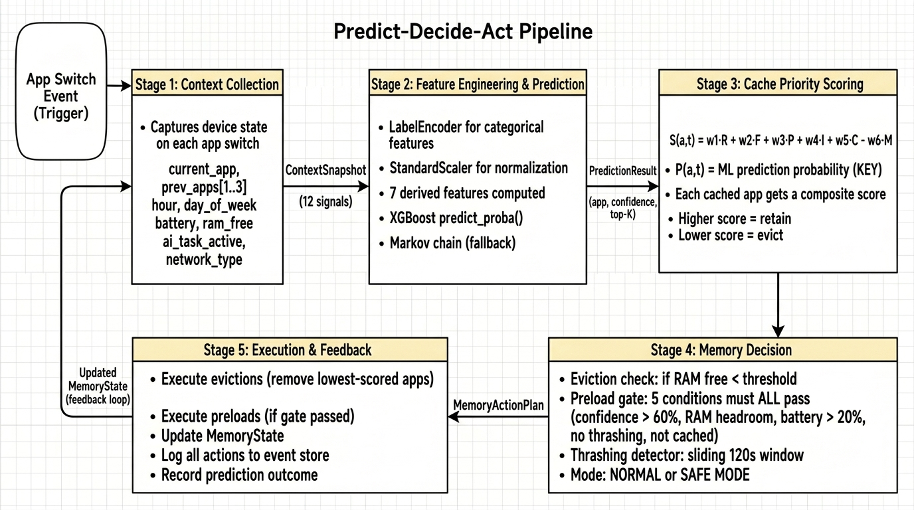
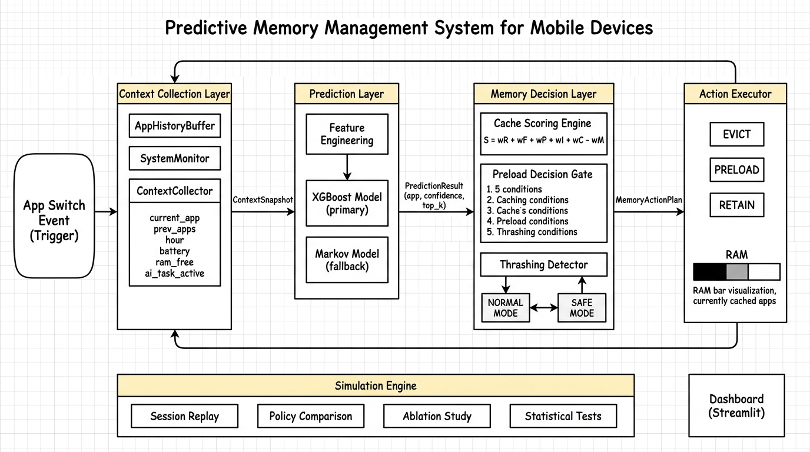
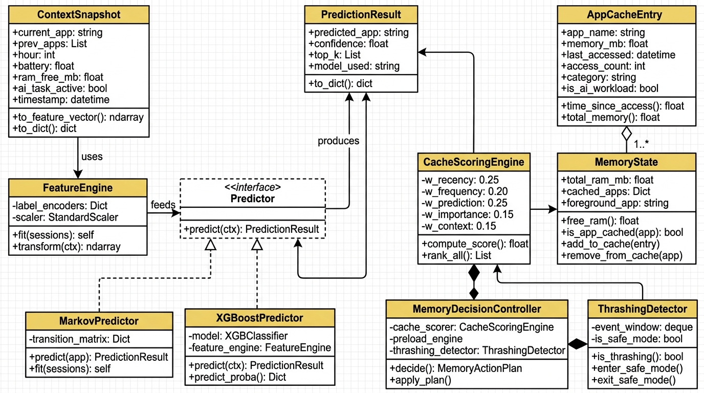

Leveraging User Context Prediction for Adaptive Memory Management in AI-Heavy Mobile Environments
Capstone Project — Project-I Review
Presented By:
[Student Name 1] — [Roll No.]
[Student Name 2] — [Roll No.]
[Student Name 3] — [Roll No.]
Guide: [Prof. Name], [Department]
[University Name], [City]
August 2026
1
1. Problem Statement
Mobile devices with 4–8 GB RAM run concurrent AI workloads (camera AI, translation, on-device LLMs, voice assistants) alongside user applications. Current memory management is reactive:
- LRU-based process cache — evicts least recently used app; ignores temporal patterns, context, and variable reload cost
- Low Memory Killer (LMKD) — kills processes only after pressure is critical; no predictive capability
- When too many apps are open, the OS removes older apps from RAM to free space. The evicted app must reload from scratch on next use.
- Current policies remove apps based only on recency, without considering whether the user is about to switch back to them.
- This leads to unnecessary cold starts (1–3s delay), wasted CPU cycles, and excess battery consumption.
- The proposed approach uses ML-based prediction to anticipate which app will be needed next and retain it in cache proactively.
Consequences
| Problem | Impact |
|---|
| App cold-start (process reload) | 1–3 sec latency per evicted app; 3–6 sec for AI apps |
| Memory thrashing | Repeated evict → reload → evict cycles |
| AI model cache eviction | Camera AI, LLM weights evicted; expensive to reload |
| Battery drain | 8–15% additional consumption from redundant I/O |
2
2. Domain Background
2.1 Mobile Memory Landscape (2024–2026)
- Average user: 40–80 installed apps, 9–10 active daily, ~65 app switches/day (Statista, 2024)
- Median Android device: 6 GB RAM; on-device AI models consume 300 MB – 4 GB each
- Mobile AI market projected at $46.7B by 2027 (MarketsandMarkets)
2.2 How Android Currently Manages Memory
| Mechanism | How It Works | Limitation |
|---|
| LMKD | Gives each app a priority score; kills lowest priority apps when memory is full | Reacts only after memory is already full; can't look ahead |
| LRU Cache | Keeps a list of background apps; removes the one you haven't used the longest | Doesn't know if you're about to use that app again in 2 minutes |
| App Standby Buckets | Puts apps in groups like "active", "frequent", "rare" | Updates only once an hour; too slow |
| Android 17 Limits | Sets a fixed memory cap per app based on device | Fixed rules; can't adapt to your behavior |
2.3 Cold Start vs. Warm Start
- Warm Start — process remains resident in RAM; UI state is preserved, and the app resumes within 50–200 ms with negligible I/O overhead.
- Cold Start — process has been terminated; the OS must re-create the process, re-initialize resources, and restore state from disk (1–3 seconds).
- AI-App Cold Start — additionally requires reloading large model weights (300 MB – 4 GB) into accelerator memory, increasing latency to 3–6 seconds.
| Launch Type | Latency | CPU Cost | I/O Cost |
|---|
| Warm (from cache) | 50–200 ms | Low | None |
| Cold (process reload) | 1,000–3,000 ms | High | High |
| Cold (AI app) | 3,000–6,000 ms | Very High | Very High |
3
3. Literature Review (1/2)
3.1 App Usage Prediction
| # | Authors / Title | Year | Method | Gap |
|---|
| [1] | Shin et al. — Mobile App Usage Prediction Using Contextual Info | 2012 | Naive Bayes, Decision Trees; 72% acc. | No memory mgmt. integration |
| [2] | Xu et al. — Heterogeneous Graph Attention for App Prediction | 2024 | Graph Neural Networks; 78% acc. | GPU required; too heavy for real-time |
| [3] | Huang et al. — AppUsage2Vec | 2019 | App embeddings + attention | No resource-constrained inference |
| [4] | Zhao et al. — ContextSense | 2023 | LSTM + contextual features; 74% acc. | Deep learning overhead |
| [5] | Pan et al. — DeepApp | 2023 | Multi-task learning (usage + duration) | On-device training infeasible |
Existing app prediction research achieves 72–78% accuracy using various ML techniques, but none of these works integrate the prediction output into OS-level memory management decisions. Additionally, most methods (GNNs, LSTMs) require GPU acceleration, making them unsuitable for real-time, per-event processing on mobile devices.
3.2 Mobile Memory Management & OS Optimization
| # | Authors / Title | Year | Method | Gap |
|---|
| [6] | AOSP — LMKD Documentation | 2024 | PSI + oom_adj_score | Reactive; no prediction |
| [7] | Lee et al. — SWAM (Samsung Research) | 2023 | Enhanced OOM + swap-clean | Static relaunch cost; no ML |
| [8] | Chen et al. — Predictive Caching for Mobile | 2024 | Frequency-based caching; 22% fewer cold starts | Frequency only; no context |
| [9] | Android — App Standby Buckets | 2024 | Usage-tier classification | Hourly updates; coarse-grained |
| [10] | Park et al. — RL-Based Memory Management | 2023 | Reinforcement learning on Android traces | Requires online interaction; fragile |
Existing memory management strategies are fundamentally reactive — they intervene only after memory pressure becomes critical. Even the most advanced approaches (SWAM, RL-based policies) rely on static heuristics or require extensive online training. None incorporate real-time, context-aware ML predictions into eviction decisions.
4
3. Literature Review (2/2)
3.3 ML for System Resource Management
| # | Authors / Title | Year | Method | Gap |
|---|
| [11] | Chen & Guestrin — XGBoost | 2016 | Gradient boosted trees | General framework; not app-specific |
| [12] | Ipek et al. — Self-Optimizing Memory Controllers | 2008 | RL for DRAM scheduling | Hardware-level; not mobile apps |
| [13] | Shi et al. — Deep Learning for Data Prefetching | 2023 | Neural network cache prefetching | L1/L2 cache; not app-level |
| [14] | Hashemi et al. — Learning Memory Access Patterns | 2018 | LSTM for hardware prefetching | No user-level context |
ML-based optimization has been applied to hardware-level cache hierarchies (L1/L2 prefetching, DRAM scheduling), but has not been extended to application-level process cache management on mobile devices. XGBoost, as a tree-based ensemble, offers the required combination of low-latency inference, interpretability, and no GPU dependency.
3.4 On-Device AI & Edge Computing
| # | Authors / Title | Year | Method | Gap |
|---|
| [15] | Lin et al. — MCUNet | 2020 | NAS for IoT (256 KB RAM) | Model arch.; not OS memory mgmt. |
| [16] | Laskaridis et al. — Adaptive Early-Exit Networks | 2024 | Dynamic inference depth | Per-inference; not cross-app |
| [17] | He et al. — On-Device LLM Memory Optimization | 2025 | KV-cache compression, offloading | Single model; not multi-app |
| [18] | Dhakal et al. — mLLM | 2025 | Elastic pipelines for LLM serving | Complements; single workload focus |
On-device AI research focuses on optimizing memory for individual model inference (quantization, KV-cache compression, speculative decoding). However, the system-level problem of managing contention between multiple concurrent AI workloads and user applications for limited RAM remains unaddressed.
Research Gap: No existing work combines ML-based app prediction with OS-level cache eviction scoring, multi-condition preload gating, and automatic thrashing detection — all working together as one system for AI-heavy mobile devices.
5
4. Proposed Methodology
4.1 Approach Overview
- Step 1: On each app-switch event, the system captures a context snapshot (foreground app, temporal features, battery, RAM utilization, AI task state).
- Step 2: The context is passed to an XGBoost classifier that outputs the predicted next application with a calibrated confidence score.
- Step 3: A multi-factor cache priority score is computed for each resident app, incorporating prediction reuse probability alongside recency, frequency, and importance.
- Step 4: Under memory pressure, lowest-scored apps are evicted. If confidence exceeds the threshold and resource conditions are met, the predicted app is pre-loaded.
- Step 5: A thrashing detector monitors eviction-reload cycles and triggers automatic degradation to Safe Mode when instability is detected.
4.2 Predict-Decide-Act Pipeline

6
5. Mathematical Formulation
5.1 Cache Priority Score (how we decide which apps to keep)
S(a, t) = w₁·R + w₂·F + w₃·P + w₄·I + w₅·C − w₆·M
Weights: w₁=0.25, w₂=0.20, w₃=0.25, w₄=0.15, w₅=0.15, w₆=0.30
- R (Recency) — exponential decay based on time since last access; recently used apps score higher
- F (Frequency) — normalized access count relative to the most-used app in cache
- P (Prediction) — ML model's predicted reuse probability for this app ← key innovation
- I (Importance) — static weight by app category (communication: 0.9, gaming: 0.3)
- C (Context) — relevance to current temporal, network, and AI-task context
- M (Memory Pressure) — penalty that increases eviction aggressiveness when RAM utilization exceeds 70%
Apps with the highest composite score are retained; lowest-scored apps are evicted first under pressure.
5.2 Preload Gate (5 safety checks before pre-loading an app)
PRELOAD = YES only if ALL 5 conditions are true:
(1) ML confidence > 60% (we're fairly sure you'll use it)
(2) Enough free RAM available (phone won't run out of memory)
(3) Battery > 20% (don't waste battery when it's low)
(4) Not currently thrashing (system is stable)
(5) App not already in memory (no point loading what's already there)
5.3 Thrashing Detection
- Thrashing occurs when the system repeatedly evicts and reloads the same applications within a short window, indicating that eviction decisions are counterproductive.
- The detector monitors eviction and reload events in a sliding 120-second window, computing a composite thrashing score from reload frequency, cache miss rate, and eviction rate.
- When the score exceeds 0.7, the system enters Safe Mode — preloading is disabled and eviction thresholds are tightened.
- Safe Mode exits automatically when the thrashing score drops below 0.3 for 60 continuous seconds.
7
6. ML Model Selection
6.1 Why We Chose XGBoost (and not Deep Learning)
| Criterion | Markov Chain (Baseline) | XGBoost (Selected) | LSTM (Rejected) |
|---|
| Speed | Instant (<1 ms) | Very fast (~2 ms) | Slow (~15 ms) |
| Context-awareness | Knows only current app | Knows time, battery, RAM, history, etc. | Same as XGBoost |
| Can we explain decisions? | Yes (simple matrix) | Yes (feature importance) | No (black box) |
| Needs a GPU? | No | No | Yes |
| Expected accuracy | 55–65% | 70–80% | 72–82% |
- Markov Chain — first-order transition model. Predicts based solely on the current app using historical transition frequencies. Context-blind (ignores time, battery, device state).
- XGBoost — gradient boosted decision tree ensemble. Processes 19 contextual features per event with ~2ms inference latency. Provides interpretable feature importance rankings, which are critical for patent claim substantiation.
- LSTM — recurrent neural network. Marginally higher accuracy (+2%), but ~7x slower inference and requires GPU acceleration via TFLite, introducing significant energy overhead.
6.2 What Information the Model Uses (19 features)
Raw Features (12):
- current_app, prev_app_1/2/3
- hour_of_day, day_of_week
- battery_level, is_charging
- ram_free_mb, network_type
- ai_task_active, app_category
Derived Features (7):
- ram_utilization (how full is RAM)
- is_peak_hour (morning/lunch/evening)
- is_weekend
- session_depth (how long into session)
- time_since_last_switch
- battery_bucket (low/med/high)
- prev_app_category
8
7. System Architecture (HLD)

- Each app-switch event triggers the Context Collection Layer, which captures 12 device signals into a ContextSnapshot.
- The Prediction Layer transforms the snapshot into features and runs XGBoost inference to produce a PredictionResult with calibrated confidence.
- The Memory Decision Layer integrates prediction output into cache scoring, evaluates preload conditions, and monitors for thrashing.
- The Action Executor applies the resulting MemoryActionPlan (evict/preload/retain) and feeds the updated MemoryState back for the next cycle.
- The Simulation Engine replays 50,000 recorded events to benchmark against baseline policies with statistical validation.
Data Flow Summary
| From | To | Data Passed |
|---|
| Module 1 | Module 2 | ContextSnapshot (12 device signals) |
| Module 2 | Module 3 | PredictionResult (predicted app + confidence %) |
| Module 3 | Module 4 | MemoryActionPlan (list of evictions + preloads) |
| Module 4 | Module 3 | Updated MemoryState (feedback loop) |
9
8. Module Descriptions
| Module | What It Does (Simple) | Input | Output | Key Classes |
|---|
| 1. Context Collection |
Takes a snapshot of your phone's current state every time you switch apps |
Raw device signals |
ContextSnapshot |
ContextCollector, SystemMonitor |
| 2. Prediction |
Predicts which app you'll open next and how confident it is |
ContextSnapshot |
PredictionResult (app + confidence) |
FeatureEngine, XGBoostPredictor |
| 3. Memory Decision |
Scores each cached app (keep or remove?) using 6-factor formula. Also checks if pre-loading is safe and watches for thrashing. |
PredictionResult + MemoryState |
MemoryActionPlan |
CacheScorer, PreloadGate, ThrashDetector |
| 4. Action Executor |
Carries out the decisions — actually removes or loads apps in memory |
MemoryActionPlan |
Updated MemoryState |
MemoryActionExecutor |
| 5. Simulation |
Replays 50,000 app switches to test our system vs. existing methods with statistics |
UserSession + Policy |
BenchmarkResult (hit rate, latency, etc.) |
SimulationEngine, MetricsCollector |
| 6. Dashboard |
Web page showing real-time memory map, predictions, and comparison charts |
All module outputs |
Interactive web UI |
Streamlit, Plotly |
Inter-Module Data Flow
| Step | From | To | Data Object |
|---|
| 1 | Device Event | Module 1 | App foreground transition trigger |
| 2 | Module 1 | Module 2 | ContextSnapshot (12 signals) |
| 3 | Module 2 | Module 3 | PredictionResult (app, confidence, top-K) |
| 4 | Module 3 | Module 4 | MemoryActionPlan (evictions, preloads, mode) |
| 5 | Module 4 | Module 3 | Updated MemoryState (feedback loop) |
10
9. Class Diagram

- ContextSnapshot — data transfer object encapsulating 12 device state signals captured at each app-switch event.
- FeatureEngine — transforms categorical and numerical inputs into the feature vector consumed by the ML predictor.
- Predictor interface — defines a common contract; implemented by both MarkovPredictor (baseline) and XGBoostPredictor (primary).
- CacheScoringEngine — computes the 6-factor weighted priority score for each cached application.
- ThrashingDetector — monitors eviction-reload patterns within a sliding window and triggers Safe Mode transitions.
- MemoryDecisionController — orchestrator that composes the scorer, preload gate, and thrashing detector to produce a MemoryActionPlan.
11
10. Comparison with Existing Approaches
| Feature | NoOpt | LRU | Android LMKD | Static Preload | Proposed |
|---|
| Eviction strategy | FIFO | Least recent | oom_adj + PSI | LRU + top-3 | ML-weighted scoring |
| Prediction-aware | No | No | No | Partial | Yes (real-time ML) |
| Context-aware | No | No | No | No | Yes (12+ signals) |
| Preload capability | No | No | No | Yes (fixed) | Yes (5-gate) |
| Thrashing detection | No | No | PSI (reactive) | No | Yes (proactive) |
| Expected cache hit rate | ~40% | ~55% | ~58% | ~62% | >75% |
| Expected avg latency | ~1200 ms | ~900 ms | ~850 ms | ~750 ms | <400 ms |
- NoOpt — FIFO eviction with no optimization; serves as a lower-bound baseline.
- LRU — evicts the least recently accessed app; effective for temporal locality but context-blind.
- Android LMKD — production Android mechanism using PSI pressure detection and priority-based killing; reactive, no prediction.
- Static Preload — pre-loads the top-N most frequently used apps; context-independent and cannot adapt to varying usage patterns.
- Proposed — integrates real-time ML prediction confidence into a multi-factor eviction score with resource-gated preloading and automatic thrashing degradation.
What Makes Our System Novel (4 Key Contributions)
- Prediction in the eviction formula — first system to use ML confidence as a weighted number in deciding what to keep/remove
- 5-condition preload safety gate — won't blindly pre-load; checks confidence, RAM, battery, stability, and cache status first
- Self-monitoring thrashing detection — automatically goes to "safe mode" when making bad decisions
- AI-workload awareness — gives higher protection to expensive AI model caches (camera AI, LLM weights)
12
11. Evaluation Plan
11.1 How We Will Test
Since modifying the Android kernel for direct evaluation is infeasible, we employ a discrete-event simulator that replays 50,000 synthetic app-switch events (across 5 user persona profiles) through each policy. Each configuration is run 30 times to ensure statistical significance, validated using paired t-tests (p < 0.05).
| Parameter | Configuration |
|---|
| Synthetic data | 50,000 app-switch events across 5 user personas |
| Policies compared | NoOpt, LRU, StaticPreload, Proposed (4 policies) |
| RAM configurations | 4 GB, 6 GB, 8 GB |
| Benchmark runs | 4 × 5 × 3 × 30 = 1,800 simulations |
| Ablation experiments | 6 × 5 × 3 × 30 = 2,700 simulations |
| Statistical test | Paired t-test, p < 0.05 |
11.2 What We Measure (KPIs)
| KPI | What It Means | Target |
|---|
| Cache Hit Rate | How often the app you open is already in memory (no reload) | >75% |
| Avg Launch Latency | Average time to open an app (lower = better) | <400 ms |
| Thrashing Events | Times the system evicts an app and immediately needs it back | <3 per session |
| Preload Success | How often a pre-loaded app was actually used | >60% |
| Prediction Accuracy | How often the ML model guesses the right next app | >70% |
11.3 Ablation Study (which features matter most?)
The ablation study systematically removes feature groups to quantify their individual contribution to prediction accuracy. This validates the model design and identifies which contextual signals are most informative. The largest expected degradation (~10–15%) occurs when app history features are removed, confirming sequential usage patterns as the primary predictive signal.
| Experiment | Features Removed | Expected Impact |
|---|
| Full model | None | Best accuracy |
| No temporal | hour, day, is_weekend, is_peak | ~5–8% drop |
| No resource | battery, ram_free, is_charging | ~2–4% drop |
| No history | prev_app_1/2/3 | ~10–15% drop |
| No category | app_category, prev_app_category | ~2–3% drop |
| Current app only | All except current_app | Drops to Markov baseline |
13
12. Implementation Timeline
| Week | Phase | What We Build |
|---|
| 1 | Foundation + Data Generation | Set up project, create fake app profiles (15-20 apps), generate 50K simulated app-switch events |
| 2 | ML Models | Build the feature converter, train Markov (baseline) and XGBoost (main) models, test accuracy |
| 3 | Memory Simulator | Build the memory state tracker, implement 3 baseline policies + our proposed system, initial results |
| 4 | Rigorous Testing | Run 1,800 benchmark simulations + 2,700 ablation experiments, compute statistics |
| 5 | Visualization | Create charts for the paper/report, build Streamlit dashboard |
| 6–7 | Patent Filing | Write patent specification, search prior art, file with Indian Patent Office |
| 8–9 | IEEE Paper | Write 6-page IEEE paper in LaTeX, capstone report, submit to conference |
Technology Stack
| Component | Technology | Why |
|---|
| Language | Python 3.10+ | Best for ML and data science |
| ML Model | XGBoost, scikit-learn | Fast, no GPU needed, interpretable |
| Data | pandas, numpy | Standard data processing |
| Statistics | scipy | t-tests, p-values |
| Charts | matplotlib, seaborn, plotly | Publication-quality figures |
| Dashboard | Streamlit | Quick interactive web apps |
| Database | SQLite | Lightweight, no setup needed |
| Testing | pytest | Standard Python test framework |
14
13. References
- C. Shin, J.-H. Hong, and A. K. Dey, "Prediction of Mobile Application Usage Using Contextual Information," Proc. ACM Interact. Mob. Wearable Ubiquitous Technol., vol. 6, no. 4, 2012.
- T. Xu, Y. Zhu, and R. Zhong, "Predicting Mobile App Usage with Heterogeneous Graph Attention Networks," IEEE Trans. Mobile Computing, vol. 23, no. 5, pp. 4512-4525, 2024.
- Z. Huang, J. Ma, and Y. Li, "AppUsage2Vec: Modeling Smartphone App Usage for Prediction," Proc. IEEE ICDE, pp. 1322-1333, 2019.
- S. Zhao, J. Xu, and K. Ramamritham, "ContextSense: Context-Aware Mobile App Prediction via Deep Sequential Learning," ACM UbiComp, 2023.
- H. Pan, C. Xu, and Y. Zhang, "DeepApp: Predicting Personalized Smartphone App Usage via Context-aware Multi-task Learning," ACM TIST, vol. 14, no. 2, 2023.
- Google AOSP, "Low Memory Killer Daemon (LMKD)," AOSP Documentation, 2024.
- S. Lee, J. Kim, and H. Bahn, "SWAM: Revisiting Swap and OOM Killer for Improving Application Responsiveness on Mobile Devices," Samsung Research, MobiSys Workshop, 2023.
- Y. Chen, L. Yang, and W. Zhang, "Memory-Efficient Mobile Application Management via Predictive Caching," IEEE Access, vol. 12, pp. 34521-34534, 2024.
- Android Developers, "App Hibernation and Standby Buckets," Android Developer Documentation, 2024.
- J. Park, Y. Lee, and S. Ha, "Learning-Based Memory Management for Mobile Devices," Proc. IEEE/ACM MICRO, pp. 289-301, 2023.
- T. Chen and C. Guestrin, "XGBoost: A Scalable Tree Boosting System," Proc. ACM SIGKDD, pp. 785-794, 2016.
- E. Ipek, O. Mutlu, and J. F. Martinez, "Self-Optimizing Memory Controllers: A RL Approach," Proc. IEEE/ACM ISCA, pp. 39-50, 2008.
- Z. Shi, X. Huang, and A. Jain, "Applying Deep Learning to Data Prefetching," Proc. IEEE/ACM MICRO, 2023.
- M. Hashemi, K. Swersky, and J. A. Smith, "Learning Memory Access Patterns," Proc. ICML, pp. 1919-1928, 2018.
- J. Lin, W. M. Chen, and S. Han, "MCUNet: Tiny Deep Learning on IoT Devices," Proc. NeurIPS, 2020.
- S. Laskaridis, A. Kouris, and N. D. Lane, "Adaptive Inference through Early-Exit Networks for Edge Devices," Proc. ACM MobiSys, 2024.
- Q. He, Y. Chen, and X. Wang, "On-Device LLM Inference: Memory Optimization Strategies for Mobile Deployment," Proc. IEEE Edge Computing, pp. 156-167, 2025.
- A. Dhakal, S. Kulkarni, and I. Stoica, "mLLM: Multi-dimensional Optimization for On-Device LLM Serving," Proc. USENIX OSDI, 2025.
Thank You
15